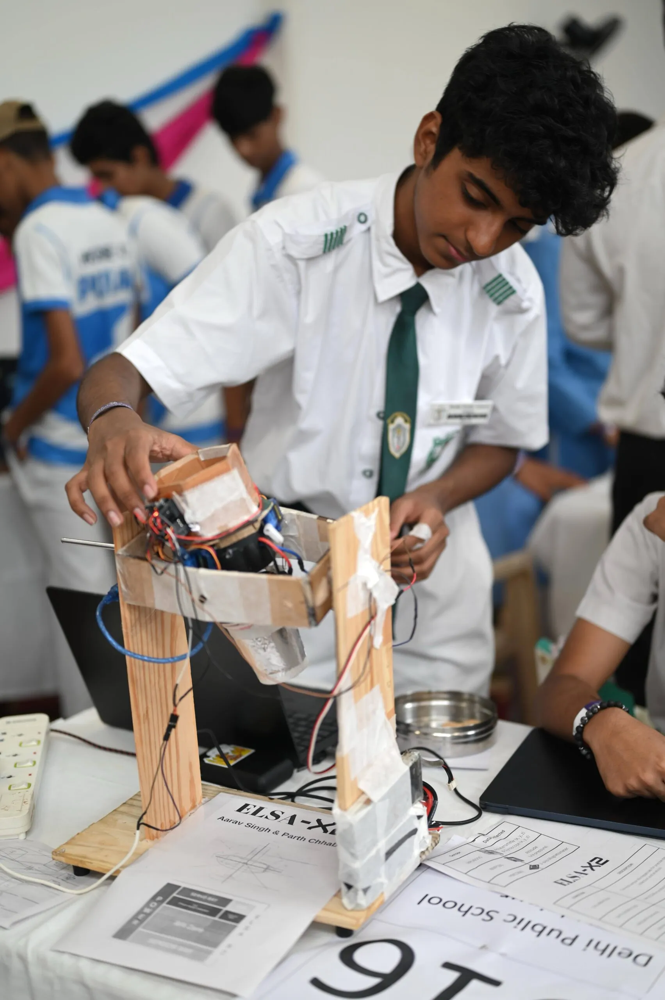

Empowering Young Innovators
“Towards the Techade with the Values We Laid” represents India’s mission to empower students with cutting-edge skills in AI, coding, IoT, robotics, and entrepreneurship while staying rooted in ethics and responsibility.
Backed by CBSE, NITI Aayog, and multiple national programs, this initiative fuels creativity, curiosity, and compassion.
